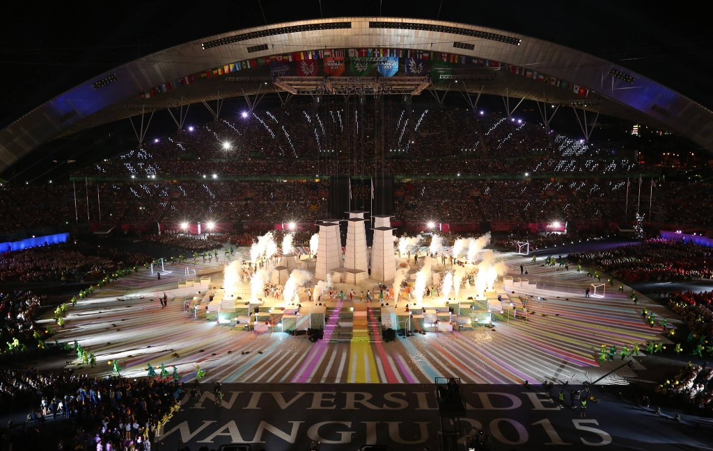

Universíade: 2015
Bronze (2015): Caio ganhou a medalha de bronze na Universíade de 2015, realizada em Gwangju, na Coreia do Sul
Bronze (2015): Caio ganhou a medalha de bronze na Universíade de 2015, realizada em Gwangju, na Coreia do Sul

Bronze (2017): No Campeonato Mundial de Atletismo de 2017, em Londres, Caio Bonfim conquistou a medalha de bronze na prova de 20 km de marcha atlética.

Prata (2019): Nos Jogos Pan-Americanos de Lima, no Peru, Caio Bonfim conquistou a medalha de prata na prova de 20 km de marcha atlética.
Medalha de prata nos 20 km, sua terceira medalha pan-americana. Ao fim de 2023, Caio conquistou o título de campeão do World Athletics Race Walking Tour, o circuito mundial da marcha atlética, temporada 2022/2023, pelo qual recebeu o prêmio de 25 mil dólares
Medalha de prata na marcha de 20 km, sendo um feito inédito na história do Brasil na modalidade de Atletismo, sendo o maior feito de sua carreira. Mesmo competindo contra outros grandes atletas, como o equatoriano Brian Pintado, que conquistou o ouro, Caio Bonfim conseguiu um ritmo forte na largada e nos 10 km finais para se manter na frente do pelotão e conquistar a medalha de prata.